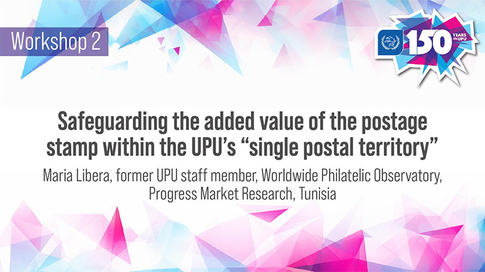
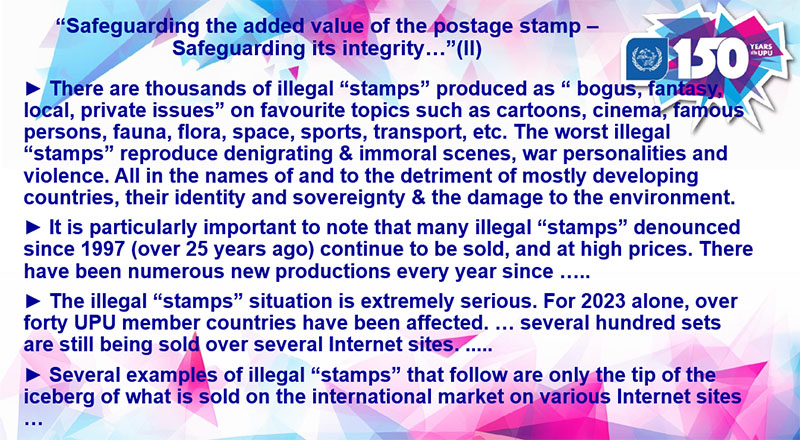
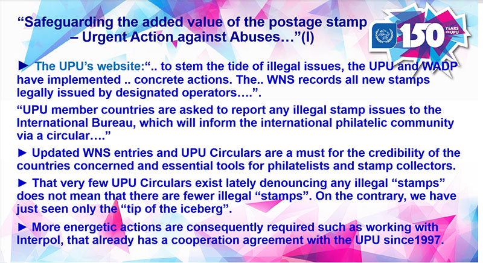
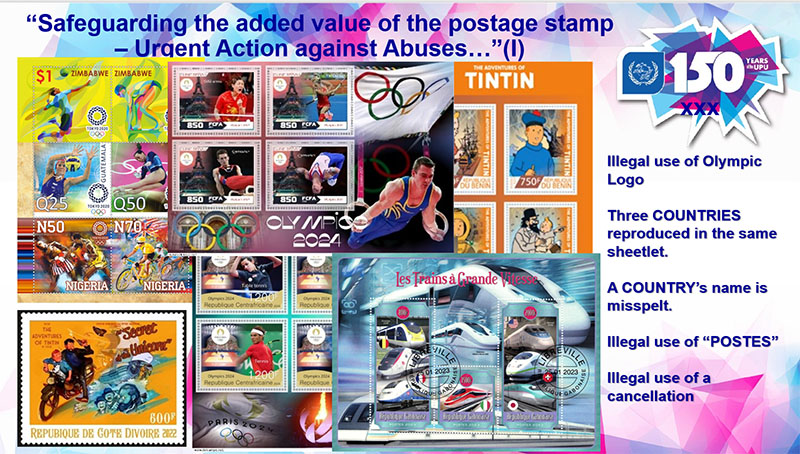
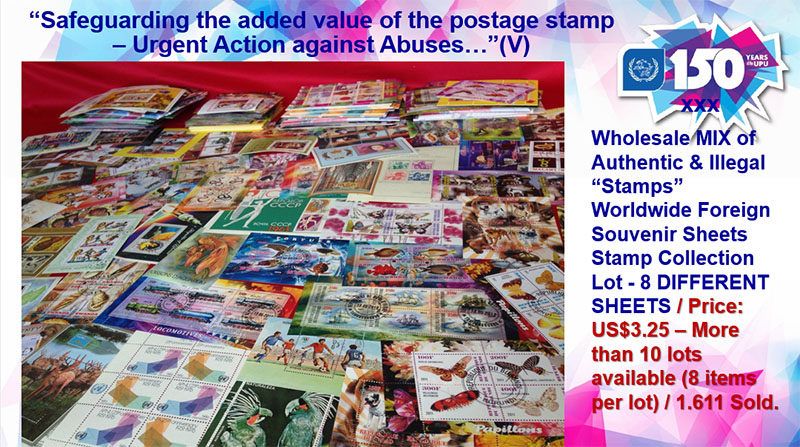
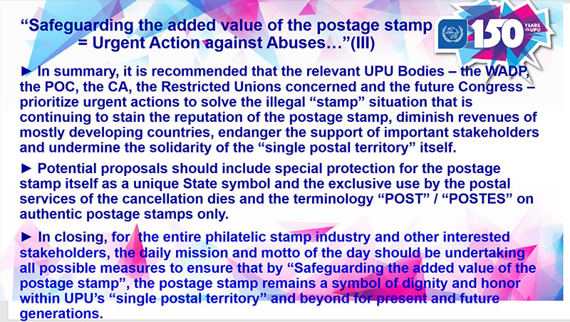

Illegal Stamps Presentation Colloquium
Safeguarding the added value of postage stamps
within the UPU's "single postal territory"
Maria Libera
Worldwide Philatelic Observatory
Excerpts from Maria Libera's presentation at the Universal Postal Union's Historian Colloquium that was organized on Feb.1 & 2, 2024 at UPU's headquarters in Bern (CH).

We encourage all interested philatelic partners to join our efforts to bring back honor and dignity to the postage stamp, as the country's “ambassador in miniature” by encouraging multiple actions on many fronts, nationally, regionally and internationally.


The celebrations of the UPU's 150th anniversary can only have their full meaning when illegal “stamps” will have been extinguished and that abusive stamps will also "be controlled", no longer taking advantage of the stamp collector.

Furthermore, we encourage you to submit your contact details, ideas or suggestions to the author of the presentation and she will definitely follow up.

The full presentation will soon be available on this webpage through a separate link.

Link to the Power Point Prezentation
Link to the Colloquium Programme